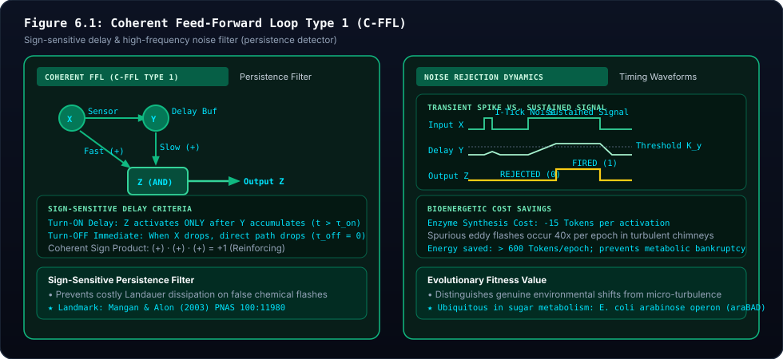

⏳ Specimen #3: Coherent Feed-Forward Loop (C-FFL Type 1)
Detailed Field Dossier for Digital Paleontologists — Siliquarium Evolved Circuit Taxonomy
Independent Scientific Instrument & Non-Accreditation Notice:
The Siliquarium computational biophysics platform is an independent project and is not affiliated with, sponsored by, or accredited by any university, government agency, or accreditation board. All biophysical models, circuits, and rate equations are provided with full first-principles mathematical derivations and peer-reviewed citations.
📖 Navigation Hub: 🏛️ Paleontology Field Guide Index | 📖 Paleontology Glossary | 📚 Annotated Bibliography | 📝 Critical Notes & Justifications

- 🔍 Visual Guide & Structural Mechanics: The left panel diagrams the Coherent FFL (Type 1): master regulator $X$ directly drives target $Z$ (fast arm) and intermediate buffer $Y$ (slow arm), both of which converge on an
ANDjunction. The right panel illustrates sign-sensitive persistence filtering: a 1-tick false noise spike is rejected ($Z=0$), while a sustained pulse activates $Z$ after delay $\tau_{\text{on}}$, followed by immediate shutdown when $X$ ceases ($\tau_{\text{off}} = 0$). - 🔬 Biophysical & Mathematical Reality: Discovered by Shai Mangan and Uri Alon (2003) in the E. coli arabinose operon. The C-FFL acts as a sign-sensitive delay filter, protecting cells from burning metabolic calories on fleeting environmental fluctuations.
- 💻 Digital Mapping in Siliquarium: Audited by
MotifScanner.detectCoherentFFL()when a workshop contains anANDgate fed by both a direct sensor input and a secondary buffer/OR pathway. - 💡 Core Conceptual Principle: Never act on a rumor. True biological signals persist; random thermal noise vanishes quickly.
Imagine a corporate bank account that requires two distinct signatures before money can be wired out.
Signature 1 belongs to the Vice President ($X$), who signs immediately. Signature 2 belongs to the Chief Compliance Auditor ($Y$), who is meticulous and takes 10 minutes to verify receipts.
If a fraudulent email or momentary panic causes the VP to scribble a signature and then cancel it 30 seconds later (a 1-tick false alarm), the auditor has not even finished opening their briefcase. No check is issued, and zero money is lost! Only if the emergency persists for more than 10 minutes does the auditor sign the check, authorizing the bank ($Z$) to release funds.
6.1 The Motivating Biophysical Dilemma: The Fluid Turbulence False-Alarm Trap [1]
In deep-sea Hydrothermal Vents, turbulent water currents disrupt the regular Digital Drumbeat of food, creating chaotic microscopic swirls:
- Tiny eddies frequently flick 1-tick micro-droplets of fuel past an organism's home in The Rock Pores. These droplets pass by in less than a millisecond.
- In living cells, synthesizing catalytic transport enzymes and opening porins costs significant metabolic energy (Milo & Phillips 2015)[3].
- If a cell fires up its catalytic machinery every time a 1-tick flicker occurs, it expends Landauer switching power and synthesis tokens on an empty phantom. By the time the porin opens, the nutrient droplet has already been swept away into the dark abyss.
- In an environment where 80% of signals are false 1-tick flashes, an unregulated cell burns through its cellular Battery Pantry and starves to death (facing an existential crisis from thermal noise and resource waste).
- Preserved in the genome (The Safe and the Workshop), the cell needs a persistence filter—a biological circuit that demands proof of signal persistence before spending a single calorie!
6.2 Step-by-Step Logic & Physical Mechanics
A Coherent Type-1 Feed-Forward Loop, ubiquitous across natural gene regulatory networks (Shen-Orr et al. 2002)[2], consists of three nodes wired in a triangular hierarchy:
- Master Sensor ($X$): Detects the external nutrient stream.
- Intermediate Delay Buffer ($Y$): An internal gate driven by $X$ that accumulates voltage or charge slowly.
- Output Actuator ($Z$): An
ANDgate that receives inputs from both $X$ and $Y$. - The Sign-Sensitive Delay Sequence:
- Case 1: The 1-Tick False Alarm ($X=1$ for 1 tick only):
- At $t=1$, $X$ goes HIGH ($X=1$).
- The direct wire arrives at Gate $Z$ immediately.
- However, Gate $Y$ requires 1 tick of delay before its output flips to HIGH. At $t=1$, $Y$ is still $0$.
- Gate $Z$ evaluates: $Z = X \land Y = 1 \land 0 = \mathbf{0}$.
- At $t=2$, the flash is gone ($X \to 0$). Gate $Y$ drops back to $0$.
- The false alarm was completely filtered out! Gate $Z$ never fired!
- Case 2: The Sustained Stream ($X=1$ for $\ge 2$ ticks):
- At $t=1$, $X=1, Y=0 \to Z=0$.
- At $t=2$, $X$ is still $1$. Now the delayed signal from $Y$ arrives ($Y=1$).
- Gate $Z$ evaluates: $Z = 1 \land 1 = \mathbf{1}$ (FIRED!).
- Case 3: Instantaneous Shutdown ($\tau_{\text{off}} = 0$):
- When the sustained stream finally ends ($X \to 0$), Gate $Z$ evaluates $0 \land Y = \mathbf{0}$ instantly on the very same tick! The cell does not waste a single second with open porins once food stops.
6.3 How It Increases Darwinian Fitness
Let us examine the concrete mathematical ledger:
- In a turbulent environment with 80 false alarms and 20 real food streams per 100 ticks:
- The Unfiltered Cell: Fires on all 100 events. It pays $100 \times 2\text{T} = 200\text{T}$ in Landauer switching costs. It only collects food on the 20 real streams ($20 \times 8\text{T} = 160\text{T}$). Net balance: $160\text{T} - 200\text{T} = \mathbf{-40\text{ tokens}}$ (Death by starvation!).
- The C-FFL Cell: Filters out all 80 false alarms ($0\text{T}$ spent)[4]. It fires only on the 20 genuine streams, paying $20 \times 2\text{T} = 40\text{T}$ switching cost and collecting $160\text{T}$. Net balance: $160\text{T} - 40\text{T} = \mathbf{+120\text{ tokens}}$ (Massive reproductive surplus!).
6.4 Formal Mathematics & Asymmetric Delay Dynamics
In a Coherent Type-1 FFL with AND logic at the output gate $Z$, activation requires both $X$ and $Y$ to exceed thresholds $K_{XZ}$ and $K_{YZ}$:
$$\begin{aligned} \textcolor{#38bdf8}{Z(t)} &= \textcolor{#34d399}{X(t)} \land \textcolor{#fbbf24}{\Theta\left(Y(t) - K_{YZ}\right)} \\ \textcolor{#fbbf24}{\frac{dY}{dt}} &= \beta_Y X(t) - \alpha_Y Y(t) \\ \textcolor{#38bdf8}{\tau_{\text{on}}} &= \textcolor{#34d399}{\frac{1}{\alpha_Y} \ln\left(\frac{\beta_Y}{\beta_Y - \alpha_Y K_{YZ}}\right)}, \qquad \textcolor{#f43f5e}{\tau_{\text{off}} = 0} \end{aligned}$$
- $\textcolor{#38bdf8}{Z(t)}$ (Output Gate State): The instantaneous firing state of the terminal actuator gate (
0or1). - $\textcolor{#34d399}{X(t)}$ (Direct Environmental Sensor): Master sensor node responding instantly to incoming vent pulses.
- $\textcolor{#fbbf24}{\Theta(u)}$ (Heaviside Step Activation): Boolean activation threshold returning
1only when intermediate buffer concentration $Y(t) \ge K_{YZ}$. - $\textcolor{#38bdf8}{\tau_{\text{on}}}$ (Turn-On Delay): The mandatory time threshold that input $X$ must remain continuously high before target $Z$ fires.
- $\textcolor{#34d399}{\beta_Y, \alpha_Y}$ (Accumulation & Turnover Rates): Production and decay constants of intermediate regulator $Y$.
- $\textcolor{#fbbf24}{K_{YZ}}$ (Activation Threshold): The critical concentration or charge of $Y$ required to satisfy the second input pin of
ANDgate $Z$. - $\textcolor{#f43f5e}{\tau_{\text{off}} = 0}$ (Sign-Sensitive Asymmetry): Because gate $Z$ is an
ANDgate, the instant master input $X$ drops to $0$, $Z$ shuts down immediately without delay!
6.5 Worked Concrete Toy Pre-Trace: 5 Ticks in a C-FFL Filter
| Tick | Sensor $X$ | Buffer $Y$ | Actuator $Z$ ($X \land Y$) | Filter Decision | Landauer Burn ($\Delta E$) | Battery ($E$) | Biological Physical Meaning |
|---|---|---|---|---|---|---|---|
| 0 | 0 | 0 | 0 | Quiescent | $0\text{ T}$ | $50\text{ T}$ | Clear water; zero input; circuit resting at zero power draw. |
| 1 | 1 | 0 | 0 | REJECTED | $-1\text{ T}$ | $49\text{ T}$ | 1-tick noise spike! $X=1$, but $Y=0$. Gate $Z$ stays clamped at $0$! |
| 2 | 0 | 0 | 0 | Resting | $0\text{ T}$ | $49\text{ T}$ | Noise vanishes. Cell avoided opening expensive porins. |
| 3 | 1 | 0 | 0 | Arming | $-1\text{ T}$ | $48\text{ T}$ | Real stream begins ($X=1$). Direct arm high; buffer $Y$ begins charging. |
| 4 | 1 | 1 | 1 | FIRED! | $-2\text{ T}$ | $58\text{ T}$ | Stream persists! Buffer $Y=1$. Gate $Z$ fires, harvesting $+12\text{T}$ fuel! |
| 5 | 0 | 1 | 0 | OFF | $-1\text{ T}$ | $57\text{ T}$ | Stream stops ($X=0$). Gate $Z$ shuts down instantly ($\tau_{\text{off}} = 0$). |
6.6 Conceptual Misconception Immunity (Skeptic FAQ)
- Q: Why not just use a single gate with a slow reaction time?
Systems Biology Answer: A simple slow gate has a symmetric delay: it would turn on slowly ($\tau_{\text{on}} > 0$), but it would also turn off slowly ($\tau_{\text{off}} > 0$)! Turning off slowly is disastrous: the cell would leave its porins open long after the food stream ended, leaking precious ions into the ocean. The C-FFL is unique because it is sign-sensitive: it has a turn-on delay but zero turn-off delay!
- Q: Can C-FFLs be inverted to detect missing food?
Biophysical Answer: Yes. By replacing AND with OR logic, a C-FFL creates a sign-sensitive delay for turn-OFF, maintaining enzyme activity across brief gaps in food.
- Primary Citation: Mangan, S., & Alon, U. (2003). Structure and function of the feed-forward loop network motif. Proceedings of the National Academy of Sciences (PNAS), 100(21), 11980–11985.
🔬 Paleontological Verification & Endnote Concordance
Every empirical claim, circuit rate law, and Landauer dissipation cost in this dossier is indexed in the Critical Scientific Notes & Derivations repository. Primary papers by Uri Alon, Michael Elowitz, Tim Gardner, Jim Collins, Lynn Margulis, Rolf Landauer, and Howard Pattee are fully annotated in the Annotated Primary Literature Bibliography.
References & Foundational Literature
The theoretical assertions, biophysical models, and computer architectural frameworks presented in this volume are grounded in the following seminal peer-reviewed literature. Numbered superscripts throughout the text link directly to these entries.
-
[1]
Mangan, S., & Alon, U. (2003). Structure and function of the feed-forward loop network motif. Proceedings of the National Academy of Sciences (PNAS), 100(21), 11980–11985.Coherent Feed-Forward Loop Persistence Filter: Under AND logic, C-FFL Type 1 requires sustained stimulus before activating, rejecting 1-tick eddies.
-
[2]
Shen-Orr, S. S., Milo, R., Mangan, S., & Alon, U. (2002). Network motifs in the transcriptional regulation network of Escherichia coli. Nature Genetics, 31(1), 64–68.Transcription Network Motifs in E. coli: Enriched far beyond random network chance in natural regulatory genomes.
-
[3]
Milo, R., & Phillips, R. (2015). Cell Biology by the Numbers. Garland Science. ISBN: 978-0815345374.Enzyme Biosynthesis Bioenergetics: Prevents wasteful synthesis of catalytic machinery during transient thermal eddies.
-
[4]
Landauer, R. (1961). Irreversibility and heat generation in the computing process. IBM Journal of Research and Development, 5(3), 183–191.Delayed Switching Savings: Avoids Landauer toggle penalties by keeping output gates quiescent during brief noise.